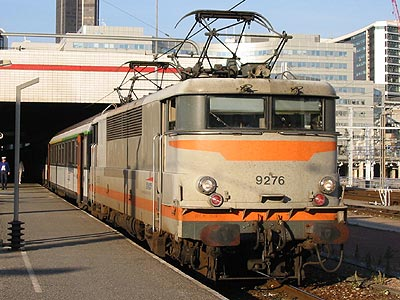

Locomotives à courant continu
Pour des raisons techniques et géographiques, les grands réseaux Français ont opté pour le 1500 Volts continu lors de leurs grands chantiers d'électrification. La SNCF a poursuivi cet effort jusqu'au milieu des années cinquante à partir desquelles le courant monophasé a démontré sa supériorité.
Pourtant, et puisque les axes les plus prestigieux furent parmi les premiers électrifiés, le réseau et le parc de machines à courant continu attire l'attention de tous les ferrovipathes. Ils évoquent ces trains luxueux et rapides qui couraient vers le Sud. Le "Mistral" et le "Capitole" résument à eux deux cet engouement.
Les machines héritées des anciennes compagnies
BB Midi (E-4000/E-4500, E-4100/E-4600, E-4200/E 4700)
2D2 5500 (E-500 PO)
Les premières machines SNCF
Programmes de redémarrage
BB 300 (E-241/264 PO - 4-BB-0300)
2D2 9100
Transition technologique
BB 8100 - 80000
CC 7000 - 7100
Les Electromécaniques SNCF
Les MTE
BB 9200
BB 9300
BB 9700
Les polyvalentes Alsthom et SW
BB 9400 - 9600
BB 8500
BB 8700
BB 88500
La machine de prestige
CC 6500

La BB 9276 à la tête d'un TER Corail Paris-Le Mans à la gare Vaugirard